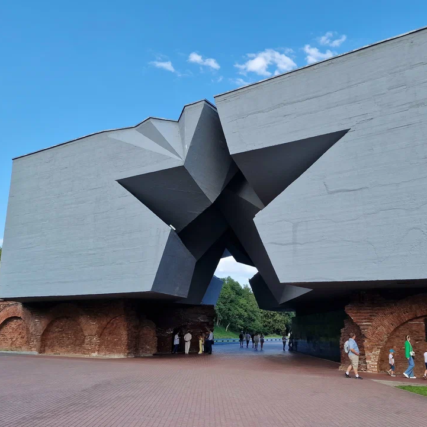

История крепости
Место для строительства крепости было обусловлено важным военно-стратегическим положением, которое занимал Брест-Литовск на Западном крае Российской империи. Он находился на Днепро-Бугском водном канале и кратчайшей сухопутной дороге из Варшавы в Москву. Политическая и военная обстановка, сложившаяся в XVIII веке в Европе, вынудила Россию разрабатывать планы укрепления и инженерного обеспечения своих рубежей обороны. Решением этих задач занималась созданная в 1796 году комиссия под руководством генерал-майора, графа П. К. Сухтелена, для проведения топографической съёмки местности был направлен капитан К. И. Опперман, изложивший результаты своей работы в инструкции «Для обозрения новой границы с Пруссией и Австрией» и в плане к ней, согласно которому вдоль 200-километровой границы предлагалось возвести девять мощных крепостей первой линии, в их числе и Брест-Литовскую крепость. Вместе с тем в 1797 году генерал-майор Ф. П. Воллан предложил создать на западных территориях единую систему обороны, костяк которой должны были составить три линии эшелонированных в глубину укреплений, в том числе 19 крепостей, но начавшаяся война с Наполеоном в 1805—1807 годы привела к отсрочке этих планов.
В 1807 году генерал П. К. Сухтелен совершил объезд присоединённых территорий. В своём докладе он подчеркнул стратегически важное положение Брест-Литовска и необходимость строительства здесь крепости как опорного пункта действующей армии. Такое же предложение высказывал и генерал от инфантерии М. Б. Барклай де Толли, считавший необходимым иметь в Брест-Литовске укреплённый лагерь, который мог бы служить базой для 20-тысячной армии, но начавшаяся в 1808 году война со Швецией перечеркнула эти планы.
В 1825 году взошедший на престол император Николай I одним из приоритетных мероприятий в деле обороны страны объявил постройку новых крепостей на западной границе, которые вместе со старыми укреплениями должны были образовать три линии, это касалось и строительства Брест-Литовской крепости, которую в этом плане относили ко второй линии обороны. В 1829 году появился проект создания Брест-Литовской крепости генерала К. И. Оппермана, этот проект обладал несколькими преимуществами: был дешевле, обеспечивал эффективную оборону, предусматривал возможность перестройки полевых укреплений в долговременные, позволял использовать кирпичные здания города в интересах крепости. В 1830 году этот проект был представлен Николаю I. Руководство работами было поручено командиру Западного инженерного округа генерал-майору И. И. Дену. Высший надзор за ходом строительства был возложен на генерал-фельдмаршала князя И. Ф. Паскевича.
